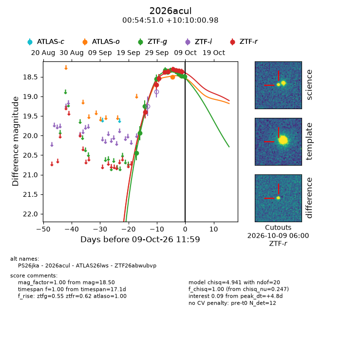
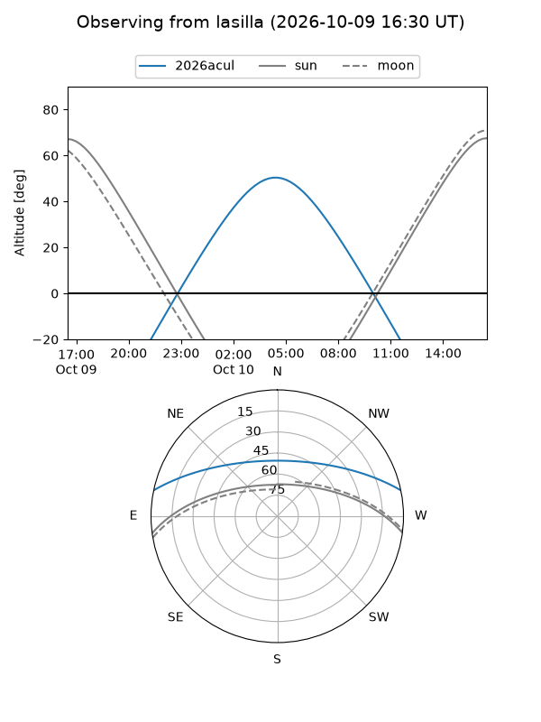
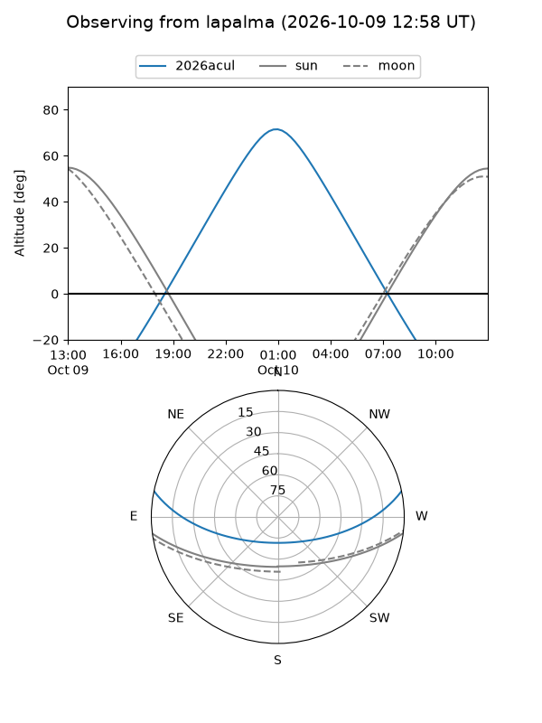
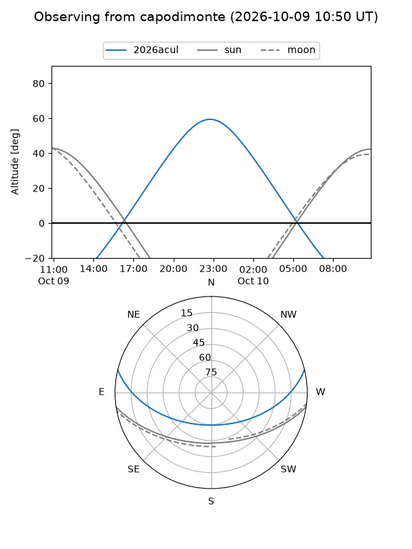
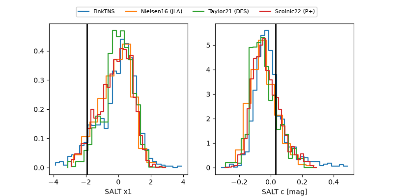

2026acul
Target 2026acul at 2026-10-09 12:01
Aliases and brokers:
FINK-ZTF: ztf.fink-portal.org/ZTF26abwubvp
Lasair-ZTF: lasair-ztf.lsst.ac.uk/objects/ZTF26abwubvp
ALeRCE-ZTF: alerce.online/object/ZTF26abwubvp
YSE-PZ: ziggy.ucolick.org/yse/transient_detail/2026acul
TNS name: wis-tns.org/object/2026acul
Direct TNS query: direct search
alt names
ZTF26abwubvp (ztf,fink_ztf)
2026acul (tns,yse)
ATLAS26lws (atlas)
PS26jka (panstarrs)
Coordinates:
equatorial (ra, dec) = 13.7124,+10.16694
equatorial (HMS+DMS) = 00:54:50.96,+10:10:00.98
galactic (l, b) = (124.3172,-52.69563)
Flags:
peak dt: +4.8
Photometry:
last atlaso=18.47, ztfg=18.50, ztfr=18.36
2 atlaso, 12 ztfg, 9 ztfr detections
Lightcurve

Visibility



Additional plots
